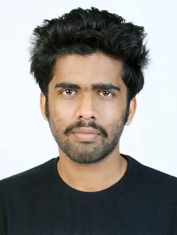

|  |
ABHISHEK N ~Founder and CTO of the Udayippu.inc Abhishek n was born on 18th of September in 1998 in White calicut, Kerala. His parents are Narayanan, and Prakasini.both of them were professionally teachers. He and his brother avinash grew up togetherther in sreeeragam perambra . He had studied at perambra higher secondary school till the plus two. After complteing the plus two abhishek tried to pursue his carrer in the area of accountancy by joining Chartered Accountancy at Lakshya calicut. obviously they were fucking scammers . and looted enough . so i quit there and wasted almost a year . after wasting a year at lakshya he almost wasted 3 moer years at Devagiri college calicut. |
|---|